Section 08
AdaBoost
Combining hundreds of very simple decision stumps, each built to fix the mistakes of the ones before it, to predict a film's rating tier.
(a) Overview
Boosting vs. bagging
Ensemble methods combine many models into one prediction. They come in two main styles. Bagging (the idea behind random forests) trains many full-sized trees independently and in parallel, each on a different random resample of the training data, then averages their votes. Because every tree sees different data, their individual quirks tend to cancel, which mainly reduces variance. Boosting works the opposite way: models are built one after another, and each new model is trained to concentrate on the rows that the earlier ones got wrong. The members are deliberately weak, and the combination is a weighted vote. Boosting mainly reduces bias, turning many models that are only slightly better than guessing into a strong one.
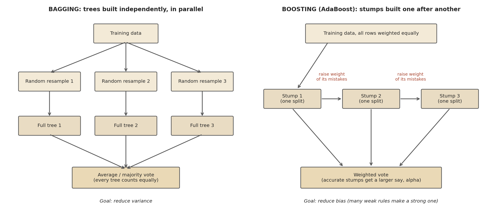
Decision stumps
AdaBoost's usual building block is the decision stump: a decision tree with exactly one split, so a single yes-or-no question and two leaves, such as "does the film have more than 1,100 votes?" On its own, a stump is a weak learner, only a little better than guessing. That is the point: it is simple, fast, and cannot overfit by itself, and boosting supplies the strength by combining many of them.
How AdaBoost works, round by round
- Start equal. Every training row gets the same weight, 1/n.
- Fit a stump to the weighted data. Rows with a large weight count for more when the stump picks its question.
- Measure its error ε: the total weight of the rows it classified wrongly.
- Give the stump a say, α (alpha), based on how accurate it was:
α = ½ · ln((1 − ε) / ε). - Reweight the rows. Multiply the weight of each row the stump got wrong by eα and each row it got right by e−α, then rescale so the weights sum to 1. The next stump is therefore pushed toward the hard cases.
- Repeat for a chosen number of rounds.
- Vote. To classify a new film, every stump votes for its predicted class with a strength equal to its α, and the class with the largest total wins.
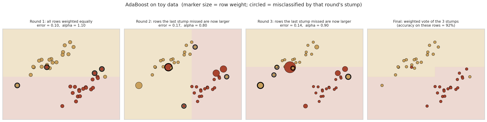
Toy data. Marker size shows each row's weight; circled rows were misclassified by that round's stump. Rows missed in one round are larger in the next, and the final panel is the weighted vote of all three stumps.
What alpha means
Alpha is the stump's voting power. A stump that is rarely wrong (small ε) gets a large α and a loud voice; a stump no better than a coin flip (ε = 0.5) gets α = 0 and no say at all; a stump worse than a coin flip would get a negative α, which flips its vote.
| Weighted error ε | Alpha | Meaning |
|---|---|---|
| 0.1 | 1.10 | Very accurate: large say |
| 0.2 | 0.69 | Accurate: solid say |
| 0.5 | 0.00 | Coin flip: no say |
| 0.8 | −0.69 | Worse than a coin flip: vote reversed |
A worked example
Suppose there are 10 rows, each with weight 0.10, and the first stump misclassifies 2 of them. Its error is ε = 0.20, so α = ½ ln(0.8 / 0.2) = 0.693. The two wrong rows are multiplied by e0.693 = 2, giving 0.20 each; the eight correct rows are multiplied by e−0.693 = 0.5, giving 0.05 each. The weights now sum to 0.80, so dividing by 0.80 gives 0.25 for each wrong row and 0.0625 for each correct one. The two rows that were 20% of the data now carry 50% of the total weight, so the next stump cannot ignore them.
The final vote works the same way. If Stump 1 (α = 0.9) predicts High, and Stumps 2 and 3 (α = 0.3 each) both predict Low, then High scores 0.9 and Low scores 0.3 + 0.3 = 0.6, and the prediction is High even though two of the three stumps disagreed. The more reliable stump outweighs the others.
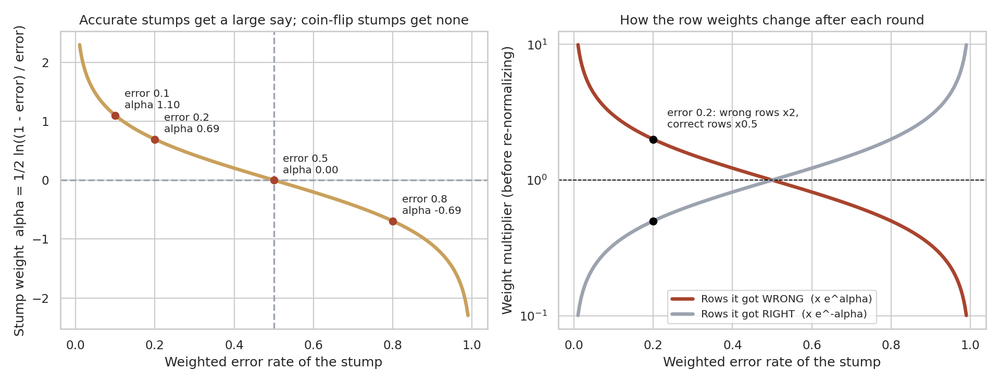
Two details that matter for this project
More than two classes. The formula above is the two-class version. For three classes,
scikit-learn uses the multiclass variant (SAMME), where α = learning rate × [ ln((1 − ε)/ε) + ln(K − 1) ]
with K = 3 classes. The extra term means a stump keeps a positive weight as long as its error is below
2/3, which is "better than random guessing among three classes," rather than below 1/2.
Learning rate. The learning rate shrinks every stump's α. A smaller value makes each stump
contribute less, so more rounds are needed, but progress is steadier. The number of rounds and the learning
rate are the two settings tuned below.
Finally, because rows that are repeatedly misclassified keep gaining weight, AdaBoost can fixate on rows that are mislabeled or simply unpredictable. That is a relevant caution for something as noisy as audience ratings.
(b) Data Prep
Labeled data
Supervised learning needs labeled data: each film must come with the correct answer so the model can learn from it and be scored against it. The label is the rating tier used in Part 3 — Low (rating up to 5.40), Medium (above 5.40 up to 6.50), or High (above 6.50) — so AdaBoost can be compared directly with the Decision Tree. The rating itself is not an input.
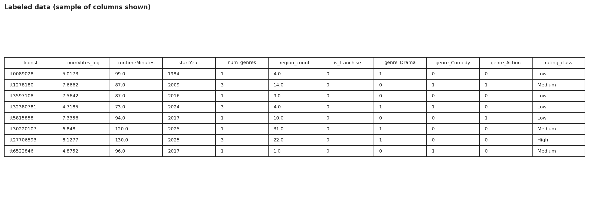
Missing — add assets/labeled-data-sample.png')">Link to the labeled data: data/labeled_data.csv
Turning categorical columns into numbers (one-hot encoding)
AdaBoost in scikit-learn accepts only numeric inputs, so any categorical column has to be converted.
Two columns in the cleaned data were categorical. The genres column holds text such as
"Drama,Crime", and a film can carry several genres at once. It was converted with
one-hot encoding: one new column per common genre, containing 1 if the film has that genre
and 0 if not (twelve columns, for the twelve most frequent genres). The is_franchise_heuristic
column, True or False, became 1 or 0. After this step every input is a number and no information is
lost for the genres kept.
# one-hot encoding: one 0/1 column per frequent genre
genre_sets = df["genres"].str.split(",").apply(set)
for g in top_genres:
df[f"genre_{g}"] = genre_sets.apply(lambda s: int(g in s))
df["is_franchise"] = df["is_franchise_heuristic"].astype(int) # True/False -> 1/0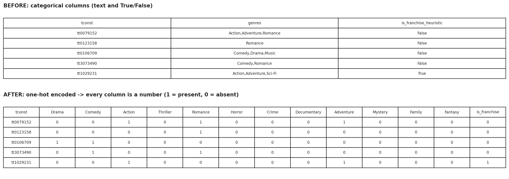
Missing — add assets/ada-onehot-step.png')">Training, validation, and testing sets
The labeled films were split at random, stratified by tier, into a training set (98,297 films) and a testing set (24,575 films), the same split used in Part 3. The two are disjoint: each film is in exactly one. That matters because a model scored on films it trained on is graded on its own answer key, which rewards memorization. Boosting can overfit too, since it keeps adjusting itself to the training rows' mistakes round after round.
Tuning needs a third group. Choosing the number of rounds and the learning rate by looking at the testing set would quietly leak test information into the model, so the training set was split once more, at random and stratified by tier, into an inner-training set (about 78,600 films, used to build each candidate model) and a validation set (about 19,700 films, used to compare candidates and pick the settings). All three groups are disjoint. The testing set is used exactly once, at the very end.
| Set | Films | Used for |
|---|---|---|
| Inner-training | ≈ 78,600 | Building each candidate AdaBoost model |
| Validation | ≈ 19,700 | Choosing the number of rounds and the learning rate |
| Testing | 24,575 | One final score, never used for tuning |
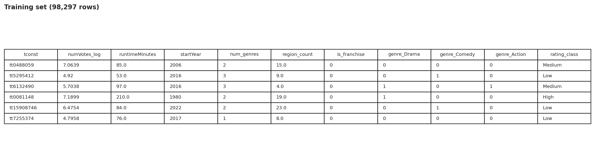
Missing — add assets/train-set-sample.png')">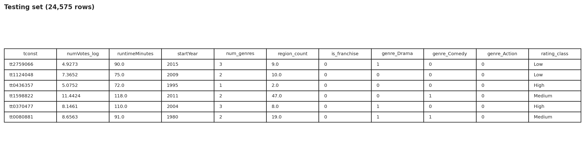
Missing — add assets/test-set-sample.png')">Links: data/train_set.csv · data/test_set.csv
(c) Code
Python with scikit-learn. Full script: scripts/adaboost.py
from sklearn.ensemble import AdaBoostClassifier
from sklearn.tree import DecisionTreeClassifier
from sklearn.metrics import accuracy_score, confusion_matrix
stump = DecisionTreeClassifier(max_depth=1) # a decision stump: one split
ada = AdaBoostClassifier(estimator=stump, algorithm="SAMME",
n_estimators=300, learning_rate=0.5, random_state=42)
ada.fit(X_inner_train, y_inner_train)
# validation accuracy after 1, 2, 3, ... 300 rounds
val_acc = [accuracy_score(y_val, p) for p in ada.staged_predict(X_val)]
# refit on the full training set with the chosen settings, then score on the testing set once
final = AdaBoostClassifier(estimator=stump, algorithm="SAMME",
n_estimators=best_n, learning_rate=best_lr).fit(X_train, y_train)
print(accuracy_score(y_test, final.predict(X_test)))
print(confusion_matrix(y_test, final.predict(X_test), labels=["Low", "Medium", "High"]))
(d) Results
Tuning the number of rounds and the learning rate
Four learning rates (0.05, 0.1, 0.5, 1.0) were each run for up to 300 rounds, and accuracy on the validation set was recorded after every round.
| Learning rate | Best number of rounds | Best validation accuracy |
|---|---|---|
| 0.05 | 247 | 0.531 |
| 0.1 | 90 | 0.531 |
| 0.5 | 245 | 0.555 |
| 1.0 | 274 | 0.569 |
Chosen: learning rate 1.0 with 274 rounds (validation accuracy 0.569). Validation set: 19,660 films; inner-training set: 78,637 films.
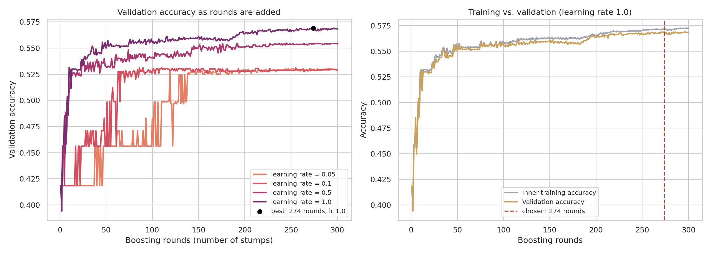
The validation set picked a learning rate of 1.0 and 274 rounds (validation accuracy 0.569). Larger learning rates did clearly better within the 300-round budget: 0.569 at 1.0, 0.555 at 0.5, and only 0.531 at both 0.1 and 0.05. That does not mean small learning rates are inherently worse. A stump's weight is scaled by the learning rate, so at 0.05 each stump contributes one-twentieth as much and the ensemble would need many more than 300 rounds to catch up. Two limits on the tuning are worth stating: the winning learning rate is the largest value tried, and its best round (274) sits close to the 300-round cap, so a larger learning rate or more rounds might add a little more accuracy.
Final accuracy and confusion matrix
With the chosen settings, AdaBoost was refit on the full training set and scored once on the 24,575 testing films. For a fair comparison, the Part 3 decision tree was re-tuned the same way: its depth was chosen on the validation set rather than the testing set.
| Model | Test accuracy |
|---|---|
| Baseline: always guess the most common tier | 0.343 |
| A single decision stump | 0.418 |
| Decision tree, depth chosen on validation (depth 10) | 0.574 |
| Decision tree, Part 3 Tree 3 (Gini, depth 5) | 0.543 |
| AdaBoost, 274 stumps (learning rate 1.0) | 0.572 |
Part 3 also reported 0.577 for a depth-11 tree, but that depth was picked by looking at the testing set, so it is slightly optimistic; the validation-tuned tree above is the fair comparison.
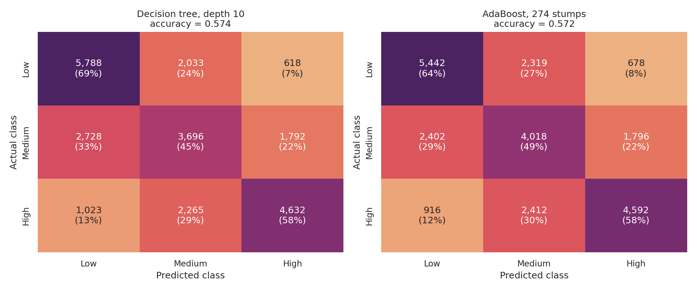
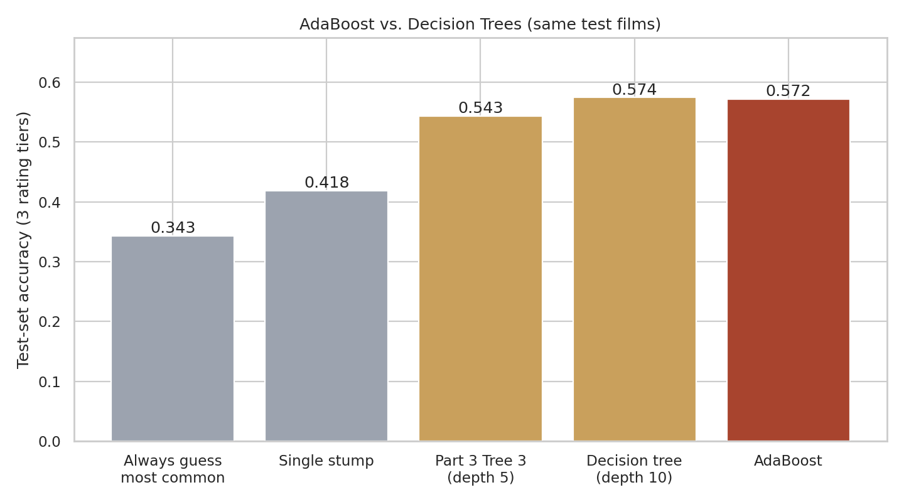
AdaBoost did not beat a properly tuned single decision tree. On the 24,575 testing films, AdaBoost scored 0.5718 and the decision tree (depth 10, chosen on the validation set) scored 0.5744, so the tree was ahead by 0.26 percentage points, or 64 films out of 24,575. A difference that small is within the noise of a test set this size (the standard error of an accuracy here is about 0.3 points), so the fair summary is a tie. AdaBoost does beat the Part 3 Tree 3 (0.543) by 2.9 points, but that tree was limited to depth 5; once a single tree is allowed to grow to a suitable depth, the advantage disappears. The Part 3 depth-11 figure (0.577), which was picked by looking at the testing set, was only about 0.3 points above this fair estimate, so that earlier optimism was small.
What boosting did accomplish is large. One stump on its own reaches only 0.418, and combining 274 of them reaches 0.572, a gain of 15.4 points. The confusion matrices show the two models make somewhat different mistakes. The tree recognizes Low films better (68.6% correct against 64.5%), while AdaBoost recognizes Medium films better (48.9% against 45.0%) and High films about equally well (58.0% against 58.5%). AdaBoost also sends fewer High films all the way down to Low (11.6% against 12.9%). Medium remains the hardest tier for both.
Inside the ensemble
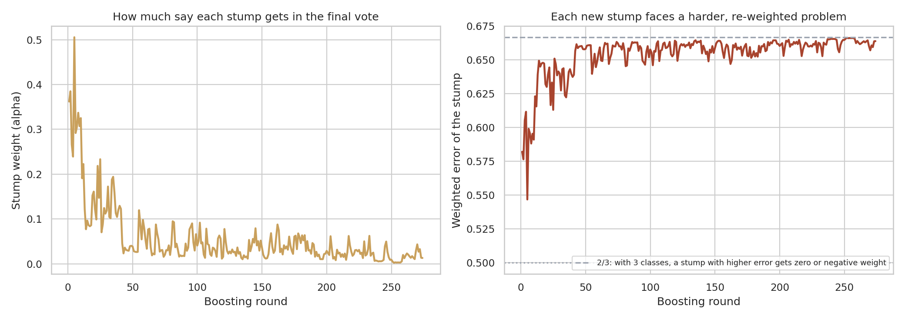
The first eight stumps show what the ensemble starts with. Each asks a single question about a film:
- Round 1 asks whether the film is a documentary: documentaries are voted High and everything else Low (weight α = 0.362).
- Round 2 asks about Horror: horror films are voted Low and the rest Medium (α = 0.385).
- Round 5 asks whether the runtime is at most 101.5 minutes: shorter films are voted Low and longer films High (α = 0.506, the largest of the eight).
- Round 8 asks whether the film has more than about 1,750 votes: more is voted High, fewer Low (α = 0.337).
Two details are instructive. First, the weighted error of every one of these stumps is between 0.55 and 0.61, above the 0.5 that would mean a coin flip in a two-class problem. With three classes the break-even point is 2/3, so each of them still earns a positive weight, which is why the stumps can be useful while looking weak. Second, Round 3 asks about documentaries but votes High on both sides. A likely explanation, though the output does not confirm it, is that by then the re-weighting had made High-rated films the most heavily weighted rows, so the best "stump" was to lean toward High everywhere, which acts as an adjustment to the class balance of the vote. The first eight stumps also lean on the same few attributes that regression found most important: documentary and horror tags, runtime, and vote count.
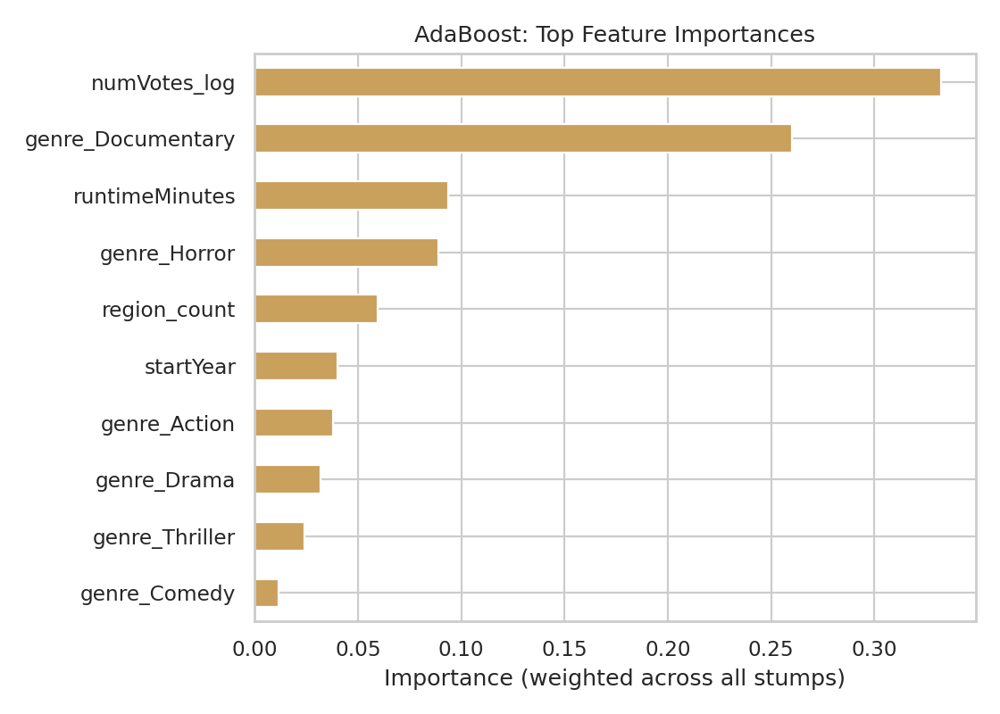
The first eight stumps rely on four attributes (documentary tag, horror tag, runtime, vote count), the same four that had the largest effects in the linear and logistic regressions.
(e) Conclusions
Boosting turned very weak rules into a strong model, but not a better one than a well-tuned tree. A single stump classified 41.8% of test films correctly; 274 stumps combined reached 57.2%, a gain of 15.4 points, which shows the method does what it promises. Yet a single decision tree with its depth chosen on validation data scored 57.4%, a difference of 0.26 points (64 films) that is within noise. On this problem, sequentially re-weighting the hard cases bought no advantage over simply letting one tree grow to the right size.
Four very different methods end up in the same place. On the same test films and three rating tiers, logistic regression scored 0.570, the tuned decision tree 0.574, and AdaBoost 0.572, all within about 0.4 points of one another, while Naïve Bayes (0.504 to 0.531) trailed behind. A linear model, a set of branching rules, and a boosted ensemble each find roughly the same ceiling. That convergence is strong evidence that the remaining errors, about 43% of films, are not a matter of modeling skill but of information that the 18 structural attributes simply do not contain. It also suggests that feature interactions add little beyond what an additive model captures, since the more flexible methods did not pull ahead.
The signal comes from a handful of attributes. The earliest stumps ask about the documentary tag, the horror tag, runtime, and vote count, matching the strongest coefficients in the regressions. Medium remains the hardest tier for every method (AdaBoost classified 48.9% of Medium films correctly), as expected for a class that sits between the extremes. Two cautions apply: the tuning grid's best learning rate and round count sat at the edge of the values tried, so slightly better settings may exist, and vote count is measured after release, so part of the signal reflects popularity rather than structure.
For the project's topic, the practical reading is balanced. Structure alone can sort films into rating tiers with roughly 57% accuracy, against 34% for guessing, and with serious tier reversals (a Low film labeled High or the reverse) for under 10% of the Low and High films, which is useful for coarse screening. But no method tried so far gets past that ceiling, so what drives the other part of audience ratings, namely content, craft, and cultural moment, has to come from information beyond these attributes.